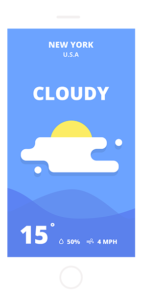

get the most fun weather app
simple, nice and user-friendly application of the weather. Only useful information
sunny
9˚
london
rio
only necessary
sometimes the simplest things are the hardest to find. So we created a new line for everyday life
sometimes the simplest things are the hardest to find. So we created a new line for everyday life
sometimes the simplest things are the hardest to find. So we created a new line for everyday life
drag and Drop


the brightest images


variable information on the air humidity, the feeling of the weather, and the ability to share this with your friends

sometimes the simplest things are the hardest to find. So we created a new line for everyday life. Sometimes the simplest


sometimes the simplest things are the hardest to find. So we created a new line for everyday life. Sometimes the simplest


what people are saying
Reviews